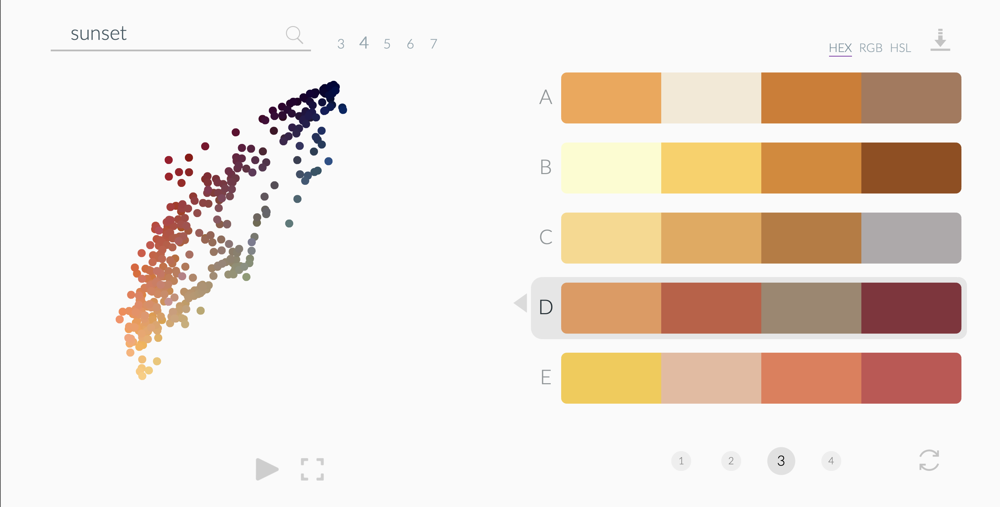
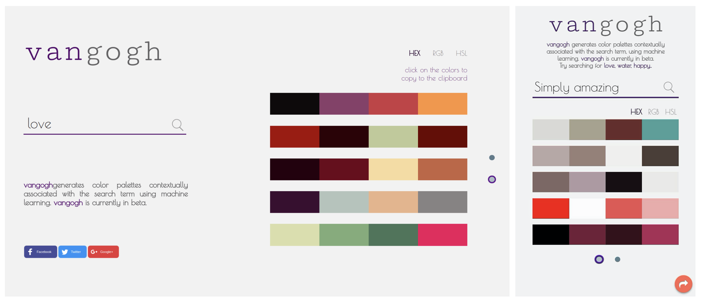
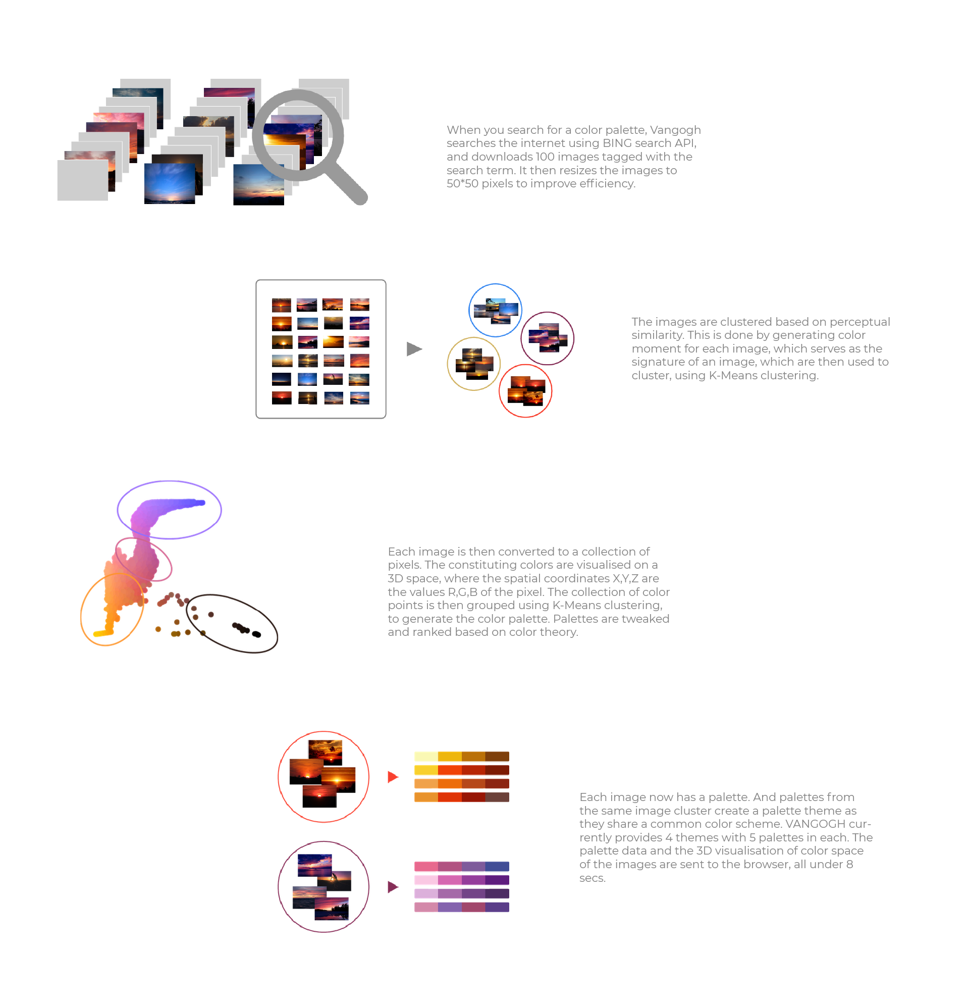
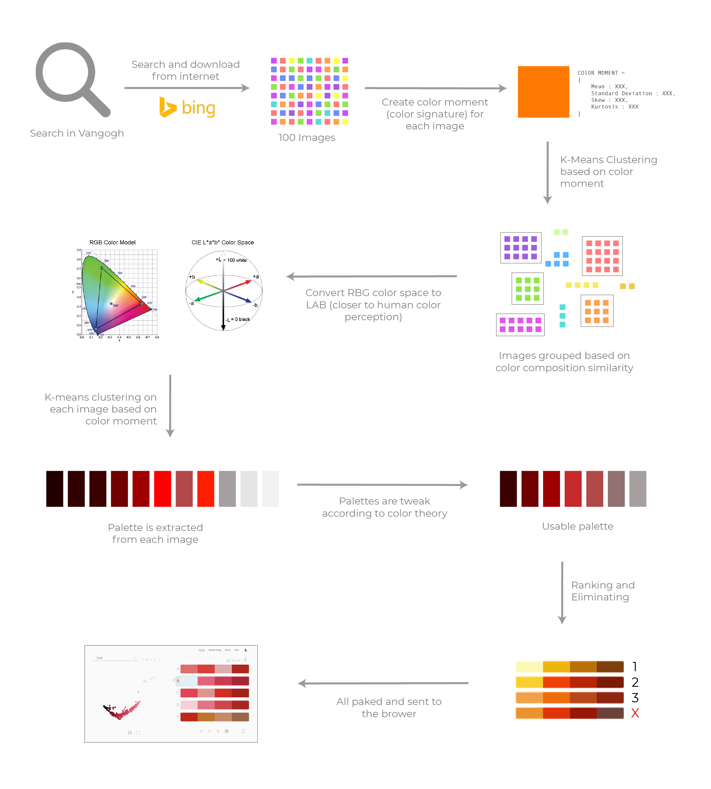

Vangogh
An AI powered color palette generator

Ever wanted a color palette that evokes the feeling of ‘a winter evening’, ‘cherry blossom’ or ‘ocean sunset’ ?
Check out the live site at http://thevangogh.in
Google, but for color palettes
Color palettes are an important aspect of every design. Choosing a right palette is far from a trivial task. This seemingly simple task requires a good understanding of colors theory. More often, as designers we are faced with
a situation where we need to choose a color palette that evokes a certain feeling. Be it illustrations, graphic design or palette for UI elements, creating a contextually appropriate color palette is an essential step in the process. How do
we usually go about it ? Is there a way, we can automate the process ? These are the questions I had in mind that made me work on Vangogh.
How do we make a machine create color palette based on a keyword ?
To answer that question, lets think of how we use a color palette. When designing something, we pick colors very carefully in a combination that would represent and evoke the feel of a certain idea. And we use those palettes
in art and designs we create. Be it photography or illustrations, their color palettes reflects the choice we made while choosing them.
The art, photographs and designs we make, reflect the color palette we chose that would evoke the desired feeling
We could extract palettes from these works we have created, as they reflect how we feel about certain color combinations. For example, when we want a color palette to evoke ‘sunset’ , we could extract color palettes from
images of sunsets, as we can assume a good photograph generally has a good color palette. So I broke it down into a set of simple (actually, not simple) process
- Get lots of images for a keyword
- Extract color palette from each image
- Hope the palettes are contextually appropriate
First Iteration
The best source for images that can we search with a keyword — *drum roll* Google Images !! Well, atually no. Google images API contains a lot of duplicates that gives the same palettes. So I went with Bing image search API. I
used a Machine Learning algorithm called K Means clustering to extract the color palettes. I then sent it out to the front end to be displayed.

Screenshots of Vangogh V1.0
Clearly, this wasn’t working. A bunch of problems
- Colors were pretty random. Reason ? Not all images returned from the search are very representative of the idea we are trying to capture
- Most of the time, background like ground, sky dominates the palette
- Who needs this tool on mobile anyway ?
After a round of suggestions and feedbacks, I set out to make version 2.0
Vangogh 2.0
I made a series of quick improvements that clearly resulted in visible increase in accuracy and a better user experience. Here’s the rough flow of how the system works.

Working of Vangogh
A lot of research and iterations went into the making of the final product. Although I’ve skipped the details of how exactly the system works, here is an attempt to capture the detailed flow.

Now that the system was working to an acceptable level, I went ahead and made a bunch of UI updates that would let the user tap into the full potential of the product. It was hard to resist adding a ton of features, but after careful elimination, I narrowed on things that would actually make sense.